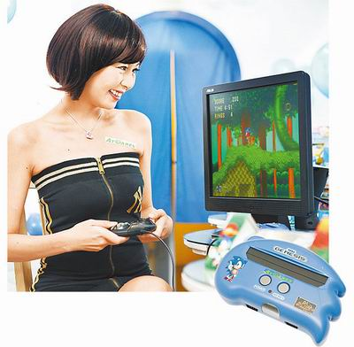

附件: mn0205.jpg
SONIC TV Game主機FB8300外型印有《音速小子》，內建12款SEGA經典遊戲，售價1480元，預計7月上市。
TV Game市場除了大家耳熟能詳的XBOX 360、PS系列、Wii之外，台灣廠商愛勝科技與日本SEGA合作推出新款TV Game主機FB8300，相較要價1萬元以上的XBOX 360、PS3電視遊戲主機，FB8300售價1480元，主打低價、入門市場，搶食宅經濟大餅，預計7月上市。
FB8300主機內建12款SEGA遊戲，其中包含《音速小子》、《寶石方塊》等多款SEGA經典遊戲，可相容SEGA MD卡帶。不過，遊戲畫面呈現上較差，不如PS3等高階遊戲主機支援720P HD高解析度來得細緻。《熱舞革命宇宙3 中文曲特別版》首次在家用平台引進中文歌曲，包含蔡依林、黃立行等歌手曲目，支援XBOX 360平台，預計5/7上市，台灣售價未定。
這個新聞有點瞎的說...
[來源：壹蘋果網絡]